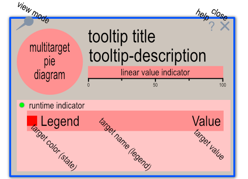

Окно элемента разделено на несколько функциональных регионов, назначение которых показано на рисунке.

title.value. Формат определяется опциональным параметром title.titleFormat. По умолчанию выводится параметр title.legend или title.name.title.value. Формат определяется опциональным параметром title.descrFormat. По умолчанию выводится параметр title.value.title.value в виде полоски, окрашенной в цвет, определяемый параметром title.color или title.status. title.value меньше, либо равно 100. Любое значение больше 100 интерпретируется как абсолютное число и масштабируется на шкале, при наличии параметра title.maxValue.
При отстутствии этого параметра, значение считается максимумом и отображается соответствующим образом на шкале.title.value линейный индикатор не отображается. Ширина индикатора изменяется соответственно ширине tooltip-title или tooltip-description.target.value. Цвет сегмента определяется параметром target.color. При наличии параметра target.link тип курсора, проходящего над соответствующим сегментом, меняется на указатель и клик левой кнопкой мыши приведет к переходу на указанный ресурс. Сегменты диаграммы сортируются в зависимости от параметра options.sortby, который может принимать значения, описывающие параметр, по которому осуществляется сортировка, такие как: 'asis', 'name', 'value', 'color', 'state'. Значение 'asis' отключает сортировку.options.isRun и может быть красным при значении 0 или зеленым, при значении 1.target.color. Текст по центру - параметром target.legend (по умолчанию), либо опциональной форматирующей строкой target.legendFormat. Текст справа - параметром target.value (по умолчанию), либо опциональной форматирующей строкой target.legendValFormat.options.scale определяет общий размер окна подсказки и может варьироваться от 1 до 0. По умолчанию используется значение 0.8 На практике, значения меньше 0.5 неприменимы.
--smartTip-mouse-delay: 250;
--smartTip-mouse-noactive: 2000;
--smartTip-font-family: 'Arial Narrow', 'DIN Condensed', 'Noteworthy', sans-serif;
--smartTip-font-stretch: condensed;
--smartTip-font-color: #666;
--smartTip-scale-font-size: 12px;
--smartTip-legend-font-size: 22px;
--smartTip-title-font-size: 30px;
--smartTip-descr-font-size: 28px;
--smartTip-title-text-wrap: 0;
--smartTip-title-text-align: left;
--smartTip-descr-text-wrap: 1.5em;
--smartTip-descr-text-align: left;
--smartTip-run-color: #0f0;
--smartTip-stop-color: #f00;
--smartTip-def-color: #666;
--smartTip-frame-fill: #fff;
--smartTip-frame-opacity: 0.95;
--smartTip-frame-scale: 0.8;
--smartTip-border-color: none;
--smartTip-border-width: 2;
--smartTip-border-radius: 2;
--smartTip-legend-fill: #fff;
--smartTip-legend-stroke: #666;
smart-tooltip в любом месте страницы, либо посредством вызова статической функции SmartTooltip.initTooltip(..) или SmartTooltip.showTooltip(..) из секции JavaScript кода.SmartTooltip.initTooltip(..) принимает два необязательных параметра id templateFileName. При отсутствии параметров происходит загрузка встроенного шаблона окна подсказки, а при наличии параметров - асинхронная загрузка указанного шаблона (в SVG формате) и привязка его к элементу страницы, определяемого по указанному id.SmartTooltip.showTooltip(..) принимает два обязательных параметра - data evt и должна быть вызвана в теле обработчика события mouseover. Параметр data представляет собой объект следующей структуры:
var data = {
id: target identificator,
x: evt.clientX,
y: evt.clientY,
options: {
// the client rectangle coordinates of correspondent element.
// this coordinates will used for place 'the pinned' tooltip near this element
// you may specify here any screen coordinates for positioning SmartTooltip window
// only top and right parameters used for calculating currently.
// The position of tooltip window will be moved by 16 px at right side of specified 'right' parameter.
tRect: { left: 0, top:0, right:0, bottom:0 },
// run indicator is a small circle near the legend. It's fill color is green, when this parameter equals true and red when false.
isRun: true / false
// SmartTooltip window will be scaled by specified factor before showing
scale: 0.6 - default
// Sort data by specified parameter. Can be one of the next parameters:
// "asis" - don't sort, default
// states/state - sort by state or colors (in case of state is not exists),
// values/value - sort by value,
// colors/color - sort by color,
// names/name - sort by legend or name,
// any other word - sort by this "word" parameter. For example: link
// Note: This option parameter may be specified only once. After this it will be used for all tooltips on the page
// If you want to show different tooltips with different sort orders, please specify this parameter each time!
sortby: "asis",
// here you have an ability to re-style SmartTooltip window by changing svg.sttip css variables
// there is no need to define all the style variables, you can specify only some of them or do not specify anything at all,
// if you like the look and fill of the built-in template.
//
// This section of parameters allows you to override the look&fill of SmartTooltip window for each specific element on the HTML page.
// Not yet implemented!
// If you have a desire to globally change the look&fill of the SmartTooltip window, then you can use a special static function
// passing into it a similar object, needed in the adjustment, variables.
// SmartTooltip.changeLookAndFill(cssVars={});
cssVars: {
"--smartTip-mouse-delay": 250;
"--smartTip-mouse-noactive": 2000;
"--smartTip-font-family": "'Arial Narrow', 'DIN Condensed', 'Noteworthy', sans-serif";
"--smartTip-font-stretch": "condensed",
"--smartTip-font-color": "#9dc2de",
"--smartTip-scale-font-size": "12px",
"--smartTip-legend-font-size": "22px",
"--smartTip-title-font-size": "30px",
"--smartTip-descr-font-size": "28px",
--smartTip-title-text-wrap: 0;
--smartTip-title-text-align: left;
--smartTip-descr-text-wrap: 1.5em;
--smartTip-descr-text-align: left;
"--smartTip-run-color": "#0f0",
"--smartTip-stop-color": "#f00",
"--smartTip-def-color": "#666",
"--smartTip-frame-fill": "#fff",
"--smartTip-frame-opacity": "0.95",
"--smartTip-frame-scale": "0.8",
"--smartTip-border-color": "none",
"--smartTip-border-width": "2",
"--smartTip-border-radius": "2",
"--smartTip-legend-fill": "#fff",
"--smartTip-legend-stroke": "#666"
}
},
title: {
uuid: 'unique target id',
legend: 'Title legend',
name: 'Title legend may be defined here also',
descr: 'Description',
value: `By default this value will be shown in description line (under title). But by using descrFormat and/or titleFormat
you can change that behavior. By default, it is assumed that the value of this parameter is specified in percents.
In case you want to display the actual value, add the "valueMax" parameter to correctly calculate the length of the indicator.`,
valueMax: null,
value: 'This text will be shown as description',
color: 'state color',
link: 'external URL',
legendFormat: 'title string with internal variables, such as $VALUE$, $NAME$, $DESCR$, ...',
legendValFormat: 'same as legendFormat string but for second string'
},
targets: [
{
uuid: 'unuque target id',
legend: 'Title legend',
name: 'Title legend may be defined here also',
descr: 'Description'
value: 'This text will be shown as description',
color: 'state color',
link: 'external URL',
parent: 'parent UUID',
legendFormat: 'legend stroke formating string with internal variables, such as $VALUE$, $NAME$, $DESCR$, ...',
legendValFormat: 'legend value formating string'
},
{}, ...
]};SmartTooltip.showTooltip(..) инициализирует, если необходимо элемент SmartTooltip, встроенным шаблоном.SmartTooltip.moveTooltip(evt) и SmartTooltip.hideTooltip(evt) вызываются из тела обработчика событий mousemove mouseout соответственно.